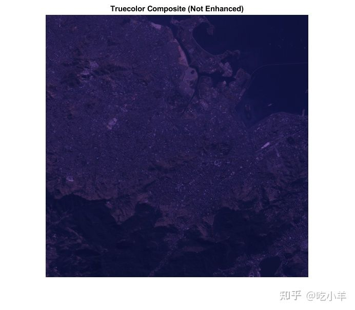
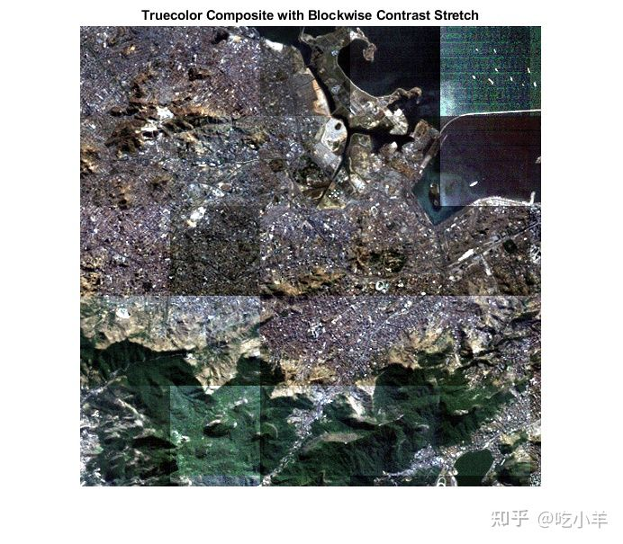
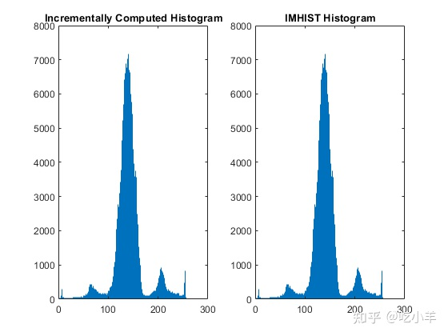
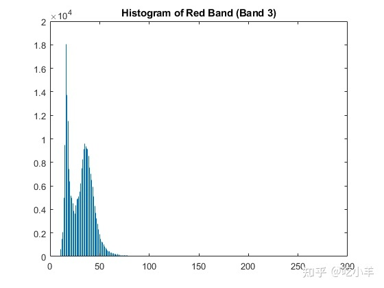
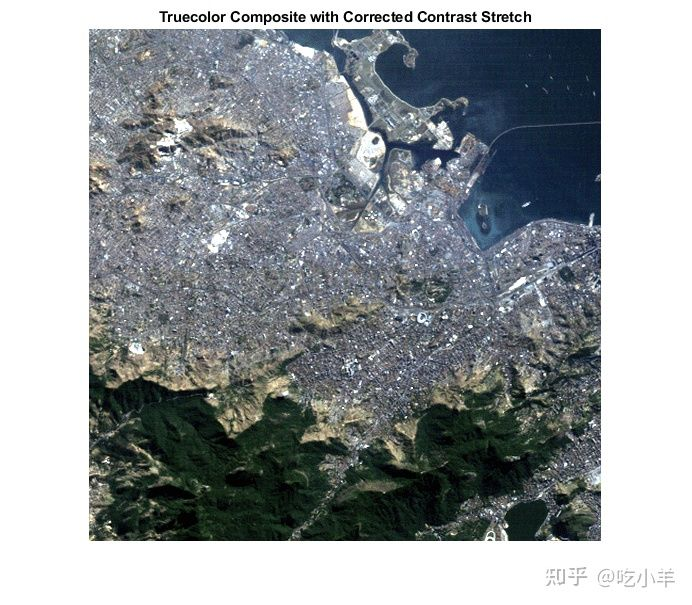

Home
本示例说明如何使用blockproc计算大图像统计信息，然后使用该信息更准确地按块处理图像。blockproc函数非常适合对图像进行分块操作、组合结果并将它们作为新图像返回。然而，许多图像处理算法需要有关图像的“全局”信息，当您一次只考虑一个图像数据块时，这是不可用的。当处理太大而无法完全加载到内存中的图像时，这些约束可能会证明是有问题的。
本示例执行的任务适用于使用blockproc. 您将增强 Erdas LAN 文件的可见带rio.lan。这些类型的块处理技术通常对大图像更有用，但小图像也适用于本示例。
步骤 1：创建真彩色成分
使用blockproc读取数据rio.lan，该文件包含 Erdas LAN 文件格式的 Landsat 专题地图图像。blockproc内置支持仅读取 TIFF 和 JPEG2000 文件。要读取其他类型的文件，您必须编写一个 Image Adapter 类来支持特定文件格式的 I/O。此示例使用预构建的 Image Adapter 类 ，该类LanAdapter支持读取 LAN 文件。
Erdas LAN 格式分别包含波段 3、2 和 1 中的可见红色、绿色和蓝色光谱。使用blockproc将可见波段提取到 RGB 图像中。
创建与 rio.lan 关联的 LanAdapter 对象。
input_adapter = LanAdapter('rio.lan');
选择可见的 R、G 和 B 波段。
input_adapter.SelectedBands = [3 2 1];
创建一个块函数，仅仅返回不变的块数据。
identityFcn = @(block_struct) block_struct.data;
创建初始真彩色图像。
truecolor = blockproc(input_adapter,[100 100],identityFcn);
显示增强前的结果。
imshow(truecolor)
title('Truecolor Composite (Not Enhanced)')

RGB 图像显得暗淡，几乎没有什么对比度。
第 2 步：增强图像 - 第一次尝试
首先，尝试使用blockproc跨动态范围拉伸数据。第一次尝试简单地定义了一个新的函数句柄，该句柄对每个数据块分别调用stretchlim和imadjust。
adjustFcn = @(block_struct) imadjust(block_struct.data,...
stretchlim(block_struct.data));
truecolor_enhanced = blockproc(input_adapter,[100 100],adjustFcn);
imshow(truecolor_enhanced)
title('Truecolor Composite with Blockwise Contrast Stretch')

您可以立即看到结果不正确。问题在于该stretchlim函数计算输入图像的直方图并使用此信息来计算拉伸限制。由于每个块的调整与其邻域无关，因此每个块都根据其局部直方图计算不同的限制。
步骤 3：检查直方图累加器类
要检查图像动态范围内的数据分布，您可以计算三个可见波段中的每一个的直方图。
当处理足够大的图像时，您不能简单地调用imhist来创建图像直方图。增量构建直方图的一种方法是使用blockproc一个类，当您在图像上移动时，该类将对每个块的直方图求和。
检查HistogramAccumulator类。
type HistogramAccumulator
% HistogramAccumulator Accumulate incremental histogram.
% HistogramAccumulator is a class that incrementally builds up a
% histogram for an image. This class is appropriate for use with 8-bit
% or 16-bit integer images and is for educational purposes ONLY.
% Copyright 2009 The MathWorks, Inc.
classdef HistogramAccumulator < handle
properties
Histogram
Range
end
methods
function obj = HistogramAccumulator()
obj.Range = [];
obj.Histogram = [];
end
function addToHistogram(obj,new_data)
if isempty(obj.Histogram)
obj.Range = double(0:intmax(class(new_data)));
obj.Histogram = hist(double(new_data(:)),obj.Range);
else
new_hist = hist(double(new_data(:)),obj.Range);
obj.Histogram = obj.Histogram + new_hist;
end
end
end
end
该类是hist函数的简单包装器，允许您以增量方式将数据添加到直方图。它不是特定于blockproc. 观察下面这个HistogramAccumulator类的简单使用。
创建HistogramAccumulator对象。
hist_obj = HistogramAccumulator;
将样本图像一分为二。
full_image = imread('liftingbody.png');
top_half = full_image(1:256,:);
bottom_half = full_image(257:end,:);
逐步计算直方图。
addToHistogram(hist_obj,top_half); addToHistogram(hist_obj,bottom_half); computed_histogram = hist_obj.Histogram;
与 IMHIST 的结果进行比较。
normal_histogram = imhist(full_image);
检查结果。直方图在数字上是相同的。
figure
subplot(1,2,1)
stem(computed_histogram,'Marker','none')
title('Incrementally Computed Histogram')
subplot(1,2,2)
stem(normal_histogram','Marker','none')
title('IMHIST Histogram')

第 4 步：将 HistogramAccumulator 类与 BLOCKPROC 一起使用
现在使用HistogramAccumulator类和blockproc来构建rio.lan数据中红色带的直方图。您可以为blockproc定义一个函数句柄，以便在每个数据块上调用addToHistogram方法。通过查看此直方图，您可以看到数据集中在可用动态范围的一小部分内。其他可见波段也有类似的分布。这就是原始真彩色成分显得暗淡的原因之一。 创建 HistogramAccumulator 对象。
hist_obj = HistogramAccumulator;
设置blockproc函数句柄。
addToHistFcn = @(block_struct) addToHistogram(hist_obj, block_struct.data);
计算红色通道的直方图。请注意，addToHistFcn函数句柄确实会产生输出。由于传递给blockproc的函数句柄不返回任何内容，因此blockproc也不会返回任何内容。
input_adapter.SelectedBands = 3; blockproc(input_adapter,[100 100],addToHistFcn); red_hist = hist_obj.Histogram;
显示结果。
figure
stem(red_hist,'Marker','none')
title('Histogram of Red Band (Band 3)')

第 5 步：使用对比拉伸增强真彩色成分
您现在可以对图像执行适当的对比度拉伸。对于传统的内存工作流，您可以简单地使用该stretchlim函数来计算imadjust的参数。如我们所见，在处理大图像时，stretchlim不容易与blockproc匹配使用，因为它依赖于完整的图像直方图。
一旦您计算了每个可见波段的图像直方图，请手动计算imadjust的参数（类似于 stretchlim所做的）。
首先计算绿色和蓝色波段的直方图。
hist_obj = HistogramAccumulator; addToHistFcn = @(block_struct) addToHistogram(hist_obj,block_struct.data); input_adapter.SelectedBands = 2; blockproc(input_adapter,[100 100],addToHistFcn); green_hist = hist_obj.Histogram; hist_obj = HistogramAccumulator; addToHistFcn = @(block_struct) addToHistogram(hist_obj,block_struct.data); input_adapter.SelectedBands = 1; blockproc(input_adapter,[100 100],addToHistFcn); blue_hist = hist_obj.Histogram;
计算每个直方图的 CDF。
computeCDF = @(histogram) cumsum(histogram) / sum(histogram); findLowerLimit = @(cdf) find(cdf > 0.01, 1, 'first'); findUpperLimit = @(cdf) find(cdf >= 0.99, 1, 'first'); red_cdf = computeCDF(red_hist); red_limits(1) = findLowerLimit(red_cdf); red_limits(2) = findUpperLimit(red_cdf); green_cdf = computeCDF(green_hist); green_limits(1) = findLowerLimit(green_cdf); green_limits(2) = findUpperLimit(green_cdf); blue_cdf = computeCDF(blue_hist); blue_limits(1) = findLowerLimit(blue_cdf); blue_limits(2) = findUpperLimit(blue_cdf);
为 IMADJUST 准备参数。
rgb_limits = [red_limits' green_limits' blue_limits'];
缩放到范围 [0, 1]。
rgb_limits = (rgb_limits - 1) / (255);
应用全局拉伸范围，创建一个新的adjustFcn并使用blockproc调整真彩色图像。
adjustFcn = @(block_struct) imadjust(block_struct.data,rgb_limits);
选择完整的 RGB 数据。
input_adapter.SelectedBands = [3 2 1]; truecolor_enhanced = blockproc(input_adapter,[100 100],adjustFcn);
显示结果。结果图像得到了很大改善，数据覆盖了更多的动态范围，并且通过使用blockproc您可以避免将整个图像加载到内存中。
imshow(truecolor_enhanced)
title('Truecolor Composite with Corrected Contrast Stretch')

======================================================================
我的测试结果及程序
下面是我测试的代码：

注：本文根据MATLAB官网内容修改而成。